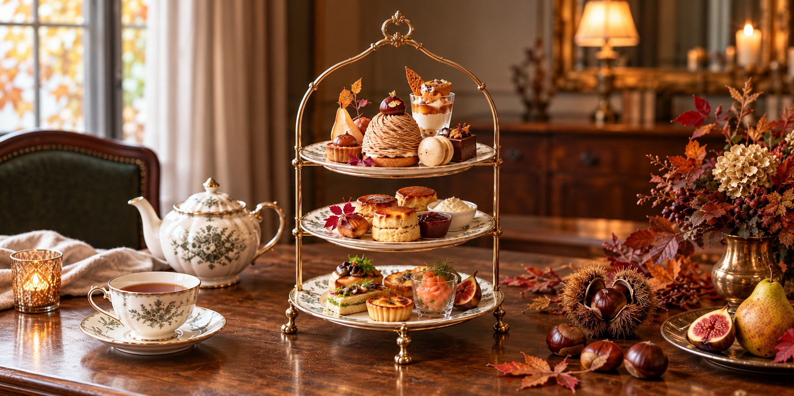

Afternoon Tea
アフタヌーンティーのご案内
季節のスイーツに、焼きたてのスコーン。
彩り豊かなセイボリーと、香り高い紅茶を添えて。
アンティークの空間で、
心ほどける午後のひとときをお過ごしください。
Classic Afternoon Tea
クラシックアフタヌーンティー

First Tier — Sweets
上段｜スイーツ
季節の果実を使った小さなケーキや焼き菓子を、香り高い紅茶とともに。
Second Tier — Scones
中段｜スコーン
焼きたてのスコーンに、クロテッドクリームとフルーツジャムを添えて。
Third Tier — Savory
下段｜セイボリー
きゅうりや卵、スモークサーモンを使った、彩り豊かなフィンガーサンドイッチをご用意しました。
¥4,800
ティーフリー
Seasonal Afternoon Tea
季節のアフタヌーンティー

First Tier — Sweets
上段｜秋のスイーツ
栗のモンブランを主役に、洋梨のタルトやマカロンなど、秋のスイーツを揃えました。
Second Tier — Scones
中段｜スコーン
焼きたてのスコーンに、さつまいもクリームとりんごジャムを添えて。
Third Tier — Savory
下段｜季節のセイボリー
スモークサーモンのサンドイッチや、きのこのキッシュなど、秋の食材を使ったセイボリーを揃えました。
¥5,800
ティーフリー
Information
ご利用案内
- 提供時間
- 12:00〜17:00
- ご利用時間
- 120分制
- ご予約
- 前日までのご予約制
- ティーフリー
- ラストオーダーは終了30分前
アフタヌーンティーのご予約は、
お電話にて承っております。
00-0000-0000
電話受付時間 11:00〜17:00
※当サイトはWeb制作実績用の架空サイトです。実際のご予約はできません。